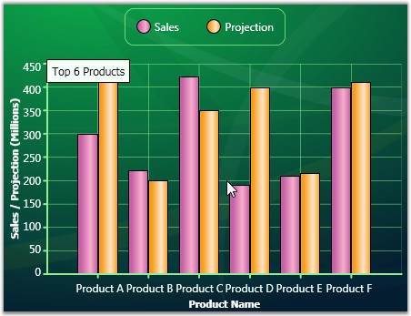

Chart for WPF also lets you add some annotations to the chart at specific control coordinates. By default, these annotations appear as simple text labels. But, their look and feel can be fully customized using custom templates.
Here are some Chart control properties that let you add annotations at Chart control coordinates:
Table 175: Property
|
Property |
Description |
|
AnnotationLabels |
Collection into which you add the ChartAnnotationLabel instances representing the annotations. |
|
AnnotationLabelTemplate |
Defines a custom look and feel for the annotation. |
The ChartAnnotationLabel type used to define an annotation exposes these properties.
Table 176: Property
|
ChartAnnotationLabel Property |
Description |
|
Content |
Content that needs to be displayed in the annotation (usually a string). |
|
OffsetX |
X offset from the top-left of the control used to determine the x-location of the annotation. |
|
OffsetY |
Y offset from the top-left of the control used to determine the y-location of the annotation. |
Here is some sample code that shows how to add annotations at Chart coordinates and how to customize their look and feel.
|
[XAML]
<syncfusion:Chart Name="chart1">
<!--Template defining the custom look and feel of the annotations.--> <syncfusion:Chart.AnnotationLabelTemplate> <DataTemplate> <Border Background="MintCream" BorderBrush="Black" BorderThickness="1"> <TextBlock Text="{Binding}" Foreground="Black" FontFamily="Tahoma" FontSize="12" Margin="5"/> </Border> </DataTemplate> </syncfusion:Chart.AnnotationLabelTemplate> <syncfusion:Chart.AnnotationLabels> <syncfusion:ChartAnnotationLabelsCollection>
<!--ChartAnnotationLabel instance representing the location and content of the annotation.--> <syncfusion:ChartAnnotationLabel x:Name="label1" Content="Top 6 Products" OffsetX="50" OffsetY="60"> </syncfusion:ChartAnnotationLabel> </syncfusion:ChartAnnotationLabelsCollection> </syncfusion:Chart.AnnotationLabels> </syncfusion:Chart> |

Figure 263: Annotation at a specific Chart Control Coordinate
See Also
Annotations at Control Coordinates